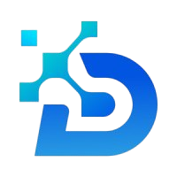

Full-Stack Web Development
Program
The Digital Hub • 2026 Cohort
From strong logic to production-ready full-stack developers in the AI era

the Digital HUB
What is a Full-Stack Developer?
A versatile problem-solver building complete web solutions
Combines client-side & server-side development
Focuses on end-to-end application delivery
the Digital HUB
The Power of Logic in Development
The real foundation of every great developer
Strong logic > memorizing frameworks & syntax
You don't need to know everything — you need to understand how to think
the Digital HUB
2026 Job Market Reality
High demand — especially for full-stack + AI skills
• Remote & hybrid positions dominate
• Companies seek production-ready developers
• AI integration is becoming a major differentiator
the Digital HUB
How We Prepare You to Be Market-Ready
Real Client Simulation
Every task is delivered as if to a real client
Junior Developer Mindset
You are not students — you are junior developers from day 1
Portfolio-First
Build → Enhance → Showcase continuously
the Digital HUB
Projects: Build as Much as Possible
The fastest way to become employable
• Do many projects
• Enhance assignments with your own features
• Create a strong portfolio that stands out
the Digital HUB
Treat This Program as a Real Job
Professional attitude from day one
• Deliver high-quality work on time
• Communicate professionally
• Think & act like a junior developer
the Digital HUB
Your Mentors = Clients & Project Managers
Real-world simulation
• Receive feedback like in professional settings
• Iterate based on client (mentor) requirements
• Learn how real companies work
the Digital HUB
Smart AI Usage in 2026
AI is your powerful co-pilot — not a replacement
• Use ChatGPT, Copilot, etc. every day
• Never commit code you don't understand
• Verify → Comprehend → Improve → Ask if needed
the Digital HUB
Full Agile Methodology
Industry standard project management
• Real sprints & retrospectives
• Daily stand-ups
• Jira-style tools
• Learn to introduce Agile even in small teams
the Digital HUB
GitHub & CI/CD Essentials
Modern development workflow
• Version control & collaboration
• Professional portfolio showcase
• Automated testing & deployment basics
the Digital HUB
Our Modern Full-Stack Curriculum
Frontend
HTML • CSS (Responsive) • JS • ES6+ • React • Next.js
Backend
Node.js • Express • Python (at least one framework) • Optional: Nest.js
Databases & Architecture
MySQL • MongoDB • MERN • Optional: Vue / Nuxt
the Digital HUB
Life Skills & Career Preparation
• LinkedIn personal branding
• Technical interview practice
• Freelance pricing & negotiation
• Remote work mastery
• Bonus sessions: DevOps, AWS, AI Engineering...
the Digital HUB
Teamwork & Professional Communication
Real projects require real collaboration
• Mandatory group projects
• All communication in English
• Clear contribution tracking
• Zero tolerance for free-riding
the Digital HUB
Practicing Remote Work
Preparing for the modern workplace
• Dedicated remote days
• Hybrid & fully remote simulation
• Tools & discipline for distributed teams
the Digital HUB
Launch Your
Full-Stack Career
The Digital Hub • 2026 Cohort
The most professional, fastest, and industry-aligned path
from beginner → market-ready full-stack developer
the Digital HUB